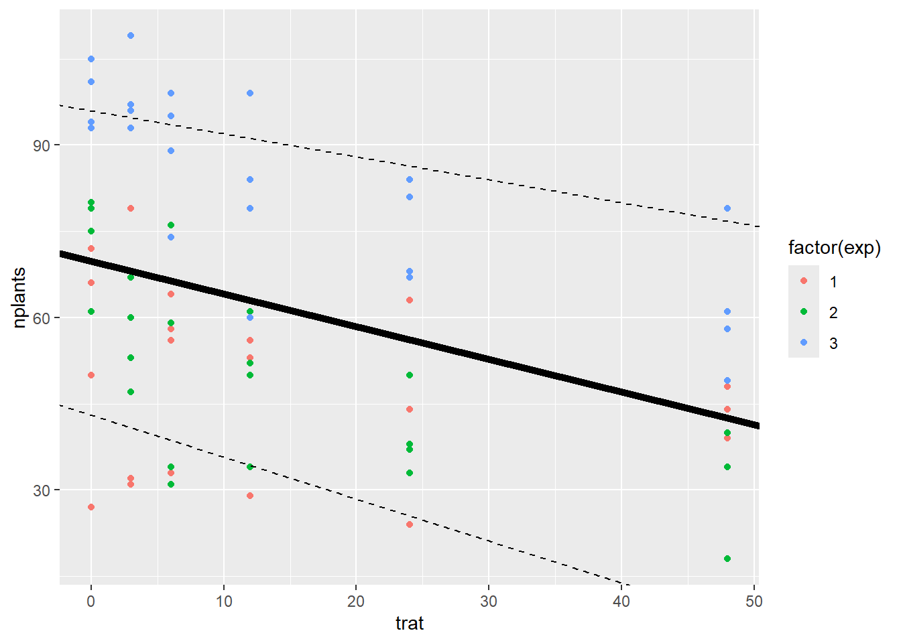

A análise de regressão é uma técnica estatística utilizada para examinar a relação entre variáveis por meio da construção de um modelo matemático. Quando os dados são quantitativos, ela costuma ser mais indicada que a análise de variância (ANOVA), pois permite descrever e prever a relação entre uma variável dependente (Y) e uma ou mais variáveis independentes (X).
O objetivo é estimar os parâmetros de uma equação que represente essa relação funcional. Com isso, é possível identificar a direção e a intensidade do efeito das variáveis independentes sobre a variável resposta, além de realizar previsões para novos casos.
Regressão linear simples
Na análise de regressão linear, parte-se do pressuposto de que existe uma relação linear entre a variável dependente e a variável independente, ou seja, essa relação pode ser representada por uma linha reta. A equação geral da regressão linear é:
y = β₀ + β₁x + ε, onde:
y representa a variável dependente (ou resposta);
x é a variável independente (ou preditora);
β₀ é o intercepto da reta (valor de y quando x = 0);
β₁ é o coeficiente angular (inclinação da reta);
ε é o termo de erro aleatório;
Na regressão linear simples, o principal objetivo é testar se o coeficiente de inclinação (β₁) é significativamente diferente de zero. Esse teste indica se há evidência estatística de uma associação linear entre as variáveis. Um valor de p pequeno (geralmente < 0,05) sugere que a inclinação é significativamente diferente de zero, indicando uma relação linear entre x e y.
Carregando pacotes e importando o conjunto de dados
Code
# Passo 1: Carregar pacotes e importar dadoslibrary(gsheet)library(ggplot2)library(dplyr)library(lme4)library(car) # para Anova()library(readxl)# Importar dados - Google Sheets# estande <- gsheet2tbl("https://docs.google.com/spreadsheets/d/1bq2N19DcZdtax2fQW9OHSGMR0X2__Z9T/edit?gid=401662555#gid=401662555") ou:estande <-read_excel("dados-diversos.xlsx", "estande") # Planilha excel
Visualizar distribuição geral com regressão
Code
# Gráfico geral para visualizar a relação entre tratamento e número de plantasestande |>ggplot(aes(trat, nplants)) +geom_point(color ="blue") +# Pontos individuaisgeom_smooth(method ="lm", se =FALSE, color ="black") +# Linha de regressãofacet_wrap(~ exp) +# Um gráfico por experimentotheme_minimal() +# Tema limpolabs(x ="% de inóculo na semente",y ="Número de plantas" )
Code
# Para ajustar para uma regressão linear usa-se o argumento method = “lm” dentro da função geom_smooth.
Modelo de melhor ajuste
Deve-se testar o modelo que melhor se ajusta aos dados. Pode-se testar fazer a análise de regressão para cada experimento (isola cada experimento) ou analisar em grupos (modelos mistos).
Análise de regressão por experimento
Analisando cada experimento isoladamente:
É preciso criar um novo objeto de dados, chamado exp1, atribuindo a ele o conjunto estande. Em seguida, deve-se filtrar o experimento de interesse e gerar um novo objeto com esse subconjunto, o que possibilita a execução da análise de regressão.
Experimento 1:
Code
# Filtrar experimento 1 e calcular média por tratamentoexp1 <- estande |>filter(exp ==1) |>group_by(trat) |>summarise(nplants2 =mean(nplants, na.rm =TRUE))# Gráfico da médiaexp1 |>ggplot(aes(trat, nplants2)) +geom_point() +ylim(20, 60)
Code
# Regressão linear com bloco (precisa existir a variável 'bloco')exp1_model <- estande |>filter(exp ==1)m_exp1 <-lm(nplants ~ trat + bloco, data = exp1_model)summary(m_exp1)
Call:
lm(formula = nplants ~ trat + bloco, data = exp1_model)
Residuals:
Min 1Q Median 3Q Max
-18.0769 -6.7847 -0.7817 4.0522 22.6091
Coefficients:
Estimate Std. Error t value Pr(>|t|)
(Intercept) 75.5833 5.7164 13.222 1.19e-11 ***
trat -0.2419 0.1323 -1.829 0.081623 .
bloco -9.2333 1.9485 -4.739 0.000111 ***
---
Signif. codes: 0 '***' 0.001 '**' 0.01 '*' 0.05 '.' 0.1 ' ' 1
Residual standard error: 10.67 on 21 degrees of freedom
Multiple R-squared: 0.5513, Adjusted R-squared: 0.5086
F-statistic: 12.9 on 2 and 21 DF, p-value: 0.0002216
Foi ajustado um modelo linear para avaliar o efeito do tratamento e do bloco sobre o número de plantas. O modelo apresentou um bom ajuste, explicando cerca de 55% da variação nos dados (R² = 0,55). O efeito do bloco foi altamente significativo (p < 0,001), indicando variações importantes entre os blocos experimentais. Já o efeito do tratamento foi marginalmente significativo (p = 0,082), sugerindo uma possível tendência de diferença entre tratamentos, embora com menor evidência estatística. O erro padrão residual foi de 10,67, e o modelo geral foi significativo pelo teste F (p < 0,001).
Call:
lm(formula = nplants ~ trat, data = exp2)
Residuals:
Min 1Q Median 3Q Max
-25.7816 -7.7150 0.5653 8.1929 19.2184
Coefficients:
Estimate Std. Error t value Pr(>|t|)
(Intercept) 60.9857 3.6304 16.798 4.93e-14 ***
trat -0.7007 0.1605 -4.365 0.000247 ***
---
Signif. codes: 0 '***' 0.001 '**' 0.01 '*' 0.05 '.' 0.1 ' ' 1
Residual standard error: 12.95 on 22 degrees of freedom
Multiple R-squared: 0.4641, Adjusted R-squared: 0.4398
F-statistic: 19.05 on 1 and 22 DF, p-value: 0.0002473
Foi ajustado um modelo linear para avaliar o efeito do tratamento (trat) sobre o número de plantas (nplants). O modelo apresentou um bom ajuste, explicando cerca de 46% da variação observada (R² = 0,46). O tratamento teve efeito estatisticamente significativo (p < 0,001), com uma estimativa de redução de 0,70 plantas por unidade do fator trat. O modelo como um todo foi altamente significativo (p < 0,001), indicando que trat é um fator importante na determinação do número de plantas nesta análise.
Call:
lm(formula = nplants ~ trat, data = exp3)
Residuals:
Min 1Q Median 3Q Max
-26.5887 -3.9597 0.7177 5.5806 19.8952
Coefficients:
Estimate Std. Error t value Pr(>|t|)
(Intercept) 95.7500 2.9529 32.425 < 2e-16 ***
trat -0.7634 0.1306 -5.847 6.97e-06 ***
---
Signif. codes: 0 '***' 0.001 '**' 0.01 '*' 0.05 '.' 0.1 ' ' 1
Residual standard error: 10.53 on 22 degrees of freedom
Multiple R-squared: 0.6085, Adjusted R-squared: 0.5907
F-statistic: 34.19 on 1 and 22 DF, p-value: 6.968e-06
Foi ajustado um modelo linear simples para investigar o efeito do tratamento sobre o número de plantas no experimento 3. O modelo apresentou um ajuste estatisticamente significativo (p < 0,001), explicando aproximadamente 61% da variação nos dados (R² = 0,61). O efeito do tratamento também foi altamente significativo (p < 0,001), com uma estimativa de redução média de 0,76 plantas para cada unidade de trat. O valor médio estimado de plantas no grupo de referência foi 95,75. O erro padrão residual foi de 10,53, indicando um bom ajuste aos dados.
Code
library(report)report(m_exp3)
We fitted a linear model (estimated using OLS) to predict nplants with trat
(formula: nplants ~ trat). The model explains a statistically significant and
substantial proportion of variance (R2 = 0.61, F(1, 22) = 34.19, p < .001, adj.
R2 = 0.59). The model's intercept, corresponding to trat = 0, is at 95.75 (95%
CI [89.63, 101.87], t(22) = 32.43, p < .001). Within this model:
- The effect of trat is statistically significant and negative (beta = -0.76,
95% CI [-1.03, -0.49], t(22) = -5.85, p < .001; Std. beta = -0.78, 95% CI
[-1.06, -0.50])
Standardized parameters were obtained by fitting the model on a standardized
version of the dataset. 95% Confidence Intervals (CIs) and p-values were
computed using a Wald t-distribution approximation.
Modelo misto - Exemplo
Code
# Modelo misto com efeitos aleatórios de experimento e blocom_misto <-lmer(nplants ~ trat + (1| exp/bloco), data = estande)# Intervalos de confiança e sumário do modeloconfint(m_misto)
Linear mixed model fit by REML ['lmerMod']
Formula: nplants ~ trat + (1 | exp/bloco)
Data: estande
REML criterion at convergence: 575.8
Scaled residuals:
Min 1Q Median 3Q Max
-2.21697 -0.63351 0.04292 0.67094 1.92907
Random effects:
Groups Name Variance Std.Dev.
bloco:exp (Intercept) 54.76 7.40
exp (Intercept) 377.43 19.43
Residual 134.99 11.62
Number of obs: 72, groups: bloco:exp, 12; exp, 3
Fixed effects:
Estimate Std. Error t value
(Intercept) 69.74524 11.57191 6.027
trat -0.56869 0.08314 -6.840
Correlation of Fixed Effects:
(Intr)
trat -0.111
Code
# ANOVA para verificar significância dos efeitos fixosAnova(m_misto) # com A maiúsculo
# Gráfico com diferentes linhas de regressão para comparaçãoestande |>ggplot(aes(trat, nplants, color =factor(exp))) +geom_point() +geom_abline(intercept =69.74, slope =-0.568, linewidth =2) +# Linha principalgeom_abline(intercept =43, slope =-0.73, linetype ="dashed") +# Linha comparativageom_abline(intercept =96, slope =-0.40, linetype ="dashed") # Outra linha comparativa

Modelo misto
Em um modelo misto, as observações são organizadas em grupos ou subgrupos, e cada um desses grupos pode apresentar efeitos aleatórios e/ou fixos distintos, conforme a estrutura dos dados. Por exemplo, quando os dados são coletados em diferentes localidades geográficas, é comum incluir um efeito aleatório para cada local, como ocorre no conjunto de dados estande.
Linear mixed model fit by REML ['lmerMod']
Formula: nplants ~ trat + (trat | exp)
Data: estande
REML criterion at convergence: 580.8
Scaled residuals:
Min 1Q Median 3Q Max
-2.0988 -0.6091 0.1722 0.6360 1.9963
Random effects:
Groups Name Variance Std.Dev. Corr
exp (Intercept) 510.68405 22.5983
trat 0.05516 0.2349 -0.82
Residual 167.91303 12.9581
Number of obs: 72, groups: exp, 3
Fixed effects:
Estimate Std. Error t value
(Intercept) 69.7452 13.2146 5.278
trat -0.5687 0.1643 -3.462
Correlation of Fixed Effects:
(Intr)
trat -0.731
optimizer (nloptwrap) convergence code: 0 (OK)
Model failed to converge with max|grad| = 0.00274249 (tol = 0.002, component 1)
Quando se usa o modelo misto, considera que todos os experimentos são agrupados, então considera que amostra é aleatória. Para fazer o modelo de regressão em grupo (misto) acrescenta-se na função aestetic o argumento group = exp.
De modo geral, os modelos mistos são mais eficazes do que aqueles que analisam cada experimento separadamente, pois conseguem considerar a variação tanto entre os experimentos quanto dentro deles. Além disso, esses modelos permitem analisar os dados de forma integrada, preservando informações importantes sobre a estrutura hierárquica dos dados.
Modelo GLM
O modelo linear generalizado (GLM) é uma extensão do modelo linear tradicional que possibilita trabalhar com diferentes tipos de variáveis resposta, tanto categóricas quanto contínuas. Além disso, o GLM permite que a relação entre a variável resposta e as explicativas seja não linear, ou seja, não está restrito à suposição de uma relação linear entre elas.
Code
lm1 <-lm(nplants ~ trat, data = exp3)summary(lm1)
Call:
lm(formula = nplants ~ trat, data = exp3)
Residuals:
Min 1Q Median 3Q Max
-26.5887 -3.9597 0.7177 5.5806 19.8952
Coefficients:
Estimate Std. Error t value Pr(>|t|)
(Intercept) 95.7500 2.9529 32.425 < 2e-16 ***
trat -0.7634 0.1306 -5.847 6.97e-06 ***
---
Signif. codes: 0 '***' 0.001 '**' 0.01 '*' 0.05 '.' 0.1 ' ' 1
Residual standard error: 10.53 on 22 degrees of freedom
Multiple R-squared: 0.6085, Adjusted R-squared: 0.5907
F-statistic: 34.19 on 1 and 22 DF, p-value: 6.968e-06
Code
glm1 <- stats::glm(nplants ~ trat, family = stats::gaussian(), data = exp3)glm2 <- stats::glm(nplants ~ trat, family = stats::poisson(link ="log"), data = exp3)AIC(glm1)
[1] 185.0449
Code
AIC(glm2)
[1] 183.9324
Code
AIC(glm2)
[1] 183.9324
Code
summary(glm1)
Call:
stats::glm(formula = nplants ~ trat, family = stats::gaussian(),
data = exp3)
Coefficients:
Estimate Std. Error t value Pr(>|t|)
(Intercept) 95.7500 2.9529 32.425 < 2e-16 ***
trat -0.7634 0.1306 -5.847 6.97e-06 ***
---
Signif. codes: 0 '***' 0.001 '**' 0.01 '*' 0.05 '.' 0.1 ' ' 1
(Dispersion parameter for gaussian family taken to be 110.9787)
Null deviance: 6235.8 on 23 degrees of freedom
Residual deviance: 2441.5 on 22 degrees of freedom
AIC: 185.04
Number of Fisher Scoring iterations: 2
Code
summary(glm2)
Call:
stats::glm(formula = nplants ~ trat, family = stats::poisson(link = "log"),
data = exp3)
Coefficients:
Estimate Std. Error z value Pr(>|z|)
(Intercept) 4.571590 0.029539 154.762 < 2e-16 ***
trat -0.009965 0.001488 -6.697 2.13e-11 ***
---
Signif. codes: 0 '***' 0.001 '**' 0.01 '*' 0.05 '.' 0.1 ' ' 1
(Dispersion parameter for poisson family taken to be 1)
Null deviance: 77.906 on 23 degrees of freedom
Residual deviance: 29.952 on 22 degrees of freedom
AIC: 183.93
Number of Fisher Scoring iterations: 4
O modelo linear generalizado com distribuição gaussiana (family = gaussian) é indicado quando a variável resposta é contínua e segue uma distribuição normal, funcionando de forma equivalente ao modelo linear clássico (lm). Por outro lado, o modelo com distribuição de Poisson (family = poisson) é apropriado quando a variável resposta é um número inteiro não negativo e segue uma distribuição de Poisson.
O critério AIC (Akaike’s Information Criterion) é utilizado para selecionar o melhor modelo entre várias opções, considerando tanto o ajuste aos dados quanto a complexidade do modelo. Modelos com valores menores de AIC são preferíveis, pois indicam um equilíbrio melhor entre precisão e simplicidade. No caso dos dados analisados, o modelo com família Poisson apresentou o menor AIC, indicando ser o mais adequado.
Regressão não-linear
Quando a relação entre as variáveis independentes e a variável dependente não pode ser representada por uma linha reta, é necessário recorrer à regressão não linear. Esse tipo de análise é apropriado quando os dados apresentam padrões que não podem ser adequadamente modelados por uma função linear, permitindo capturar relações mais complexas entre as variáveis.
Carregar pacotes e importar dados
Code
# Pacote para importar tabela do Google Sheetslibrary(gsheet)# Importar dadosfungi <-gsheet2tbl("https://docs.google.com/spreadsheets/d/1bq2N19DcZdtax2fQW9OHSGMR0X2__Z9T/edit?gid=465348652#gid=465348652")
Visualizar os dados para todos os fungos
Code
library(dplyr)library(ggplot2)# Agrupar por fungo e dose, calcular média de germinaçãofungi_summary <- fungi |>group_by(code, dose) |>summarise(germination =mean(germination, na.rm =TRUE), .groups ="drop")# Plotar a germinação por dose para cada fungofungi_summary |>ggplot(aes(x = dose, y = germination)) +geom_point() +geom_line() +facet_wrap(~ code) +theme_minimal() +labs(title ="Germinação por dose para cada fungo",x ="Dose",y ="Germinação média")
Selecionar um fungo específico para ajustar modelos (exemplo: FGT43)
Code
# Filtrar dados para o fungo FGT43FGT43 <- fungi_summary |>filter(code =="FGT43")
Ajustar modelos de regressão não linear usando o pacote drc
O pacote drc é amplamente utilizado para o ajuste de modelos de regressão em estudos de dose-resposta. Ele oferece uma variedade de modelos, como log-logístico, log-probit, Weibull, entre outros, permitindo representar com precisão a relação entre a dose aplicada e a resposta observada. Além disso, o pacote disponibiliza funções para a estimativa de parâmetros importantes, como o EC50 (dose efetiva para 50% da resposta máxima).
Code
library(drc)# Ajustar modelo Weibull 2.3m_wb <-drm(germination ~ dose,data = FGT43,fct =W2.3())# Ajustar modelo log-logístico 3 parâmetros (LL.3)m_ll3 <-drm(germination ~ dose,data = FGT43,fct =LL.3())# Comparar AIC para escolher o melhor modeloAIC(m_wb)
[1] 32.34994
Code
AIC(m_ll3)
[1] 26.7762
Code
# Resumo do melhor modelo (exemplo: LL.3)summary(m_ll3)
Estimar EC50 para todos os fungos de uma vez (pacote ec50estimator)
A função do pacote ec50estimator permite calcular os valores de EC50 de forma prática e eficiente. Esses valores representam a dose necessária para atingir 50% da resposta máxima e são especialmente úteis para comparar a sensibilidade entre diferentes identificadores (ID). Com isso, é possível identificar variações na resposta à dose entre tratamentos, linhagens ou isolados, o que auxilia na avaliação da eficácia ou resistência em diferentes grupos.
Code
# Instale o pacote se ainda não tiver: install.packages("ec50estimator")library(ec50estimator)# Estima EC50 para cada fungo (isolate_col = "code"), podendo estratificar por estado (strata_col)df_ec50 <-estimate_EC50(germination ~ dose,data = fungi,isolate_col ="code",strata_col ="state", # pode omitir se não tiverinterval ="delta",fct = drc::LL.3())
Visualizar os resultados da estimativa EC50
Code
library(ggplot2)# Gráfico de pontos ordenando pelo valor da estimativa (menor para maior EC50)df_ec50 |>ggplot(aes(x =reorder(ID, Estimate), y = Estimate)) +geom_point() +coord_flip() +labs(x ="Fungos (ordenados por EC50)", y ="EC50 estimado") +theme_minimal()
Code
# Histograma da distribuição dos valores EC50df_ec50 |>ggplot(aes(x = Estimate)) +geom_histogram(bins =5, color ="black", fill ="steelblue") +labs(title ="Distribuição dos valores EC50 estimados", x ="EC50", y ="Frequência") +theme_minimal()
O comando options(scipen = 999) ajusta a opção scipen, que controla a exibição de números em notação científica. Ao definir esse valor como 999, o R passa a exibir números longos em formato decimal comum, evitando a notação exponencial.
Em seguida, o bloco de código realiza as seguintes operações sobre o dataframe dat:
Remove as colunas Isolate e Population, que não farão parte do novo conjunto de dados.
Agrupa os dados pelas variáveis Code, Year e Dose.
Calcula a média da variável GC para cada combinação desses grupos.
Armazena o resultado em um novo dataframe chamado dat2, criando uma nova coluna chamada GC_mean, que contém a média de GC dentro de cada grupo.
Essas operações são úteis para resumir os dados e preparar o conjunto para análises posteriores.
Exemplo: gráfico só com um dos isolados - FGT152
Criou-se um gráfico usando o dataframe FGT152, que é um subconjunto dos dados filtrados do dat2.
Esse modelo é utilizado para descrever a relação entre a dose de um agente ou tratamento e a resposta biológica observada. Ele assume que a resposta varia de forma crescente ou decrescente com o aumento da dose, seguindo uma curva sigmoide (em forma de “S” ou “S” invertido). É especialmente útil em estudos de dose-resposta, onde se espera esse tipo de comportamento não linear.
O comando drc1 <- drm(GC_mean ~ Dose, data = FGT152, fct = LL.3()) ajusta um modelo de regressão de dose-resposta utilizando a função drm() do pacote drc. Nesse caso:
GC_mean ~ Dose: define que a variável resposta é GC_mean e a variável preditora é Dose;
data = FGT152: indica que os dados utilizados estão no dataframe FGT152;
fct = LL.3(): especifica o uso do modelo log-logístico de três parâmetros (LL.3), adequado para curvas sigmoides.
Após o ajuste, o comando AIC(drc1) calcula o Akaike Information Criterion (AIC) do modelo, uma medida que considera tanto o ajuste quanto a complexidade do modelo, quanto menor o AIC, melhor o modelo.
Code
library(drc)drc1 <-drm(GC_mean ~ Dose, data = FGT152,fct =LL.3())AIC(drc1)
O comando ED(drc1, 50) estima a dose efetiva necessária para alcançar 50% da resposta máxima (ED50). A função ED() retorna essa estimativa com base no modelo ajustado.
Apresentou o melhor ajuste aos dados com base no valor do AIC. Esse modelo oferece maior flexibilidade na modelagem da curva dose-resposta por incluir o parâmetro de assimetria (g). Esse parâmetro permite que a curva assuma formas assimétricas, ajustando-se melhor a situações em que a resposta não segue uma simetria perfeita em torno da dose efetiva, resultando em curvas sigmoides assimétricas.
Code
drc1 <-drm(GC_mean ~ Dose, data = FGT152,fct =W1.3())AIC(drc1)
A função estimate_EC50() é usada para estimar os valores de EC50 a partir dos dados disponíveis. Ela recebe diversos argumentos, cada um com um papel específico:
isolate_col = "Code" define a coluna "Code" como identificador único para as diferentes amostras ou grupos;
interval = "delta" especifica o tipo de intervalo de confiança a ser calculado para as estimativas de EC50;
fct = drc::LL.3() indica que o modelo de ajuste utilizado é o log-logístico de três parâmetros.
No gráfico criado com ggplot2, dentro da função aes(), o argumento (Estimate, reorder(ID, Estimate)) mapeia as variáveis para os eixos x e y. Aqui, Estimate representa os valores estimados de EC50, enquanto ID é reordenado com base nesses valores para controlar a ordem de exibição no gráfico.
A função geom_errorbar() adiciona barras de erro ao gráfico, usando os valores Lower e Upper, que correspondem aos limites inferior e superior dos intervalos de confiança das estimativas de EC50. Por fim, o comando xlim(0, 30) define os limites do eixo x, restringindo a visualização das estimativas a valores entre 0 e 30.
---format: htmleditor: visual---# **Análise de Regressão**A análise de regressão é uma técnica estatística utilizada para examinar a relação entre variáveis por meio da construção de um modelo matemático. Quando os dados são quantitativos, ela costuma ser mais indicada que a análise de variância (ANOVA), pois permite descrever e prever a relação entre uma variável dependente (Y) e uma ou mais variáveis independentes (X).O objetivo é estimar os parâmetros de uma equação que represente essa relação funcional. Com isso, é possível identificar a direção e a intensidade do efeito das variáveis independentes sobre a variável resposta, além de realizar previsões para novos casos.# **Regressão linear simples**Na análise de regressão linear, parte-se do pressuposto de que existe uma relação linear entre a variável dependente e a variável independente, ou seja, essa relação pode ser representada por uma linha reta. A equação geral da regressão linear é:\**y = β₀ + β₁x + ε**, onde:- *y* representa a variável dependente (ou resposta);- *x* é a variável independente (ou preditora);- *β₀* é o intercepto da reta (valor de *y* quando *x = 0*);- *β₁* é o coeficiente angular (inclinação da reta);- *ε* é o termo de erro aleatório;Na regressão linear simples, o principal objetivo é testar se o coeficiente de inclinação (*β₁*) é significativamente diferente de zero. Esse teste indica se há evidência estatística de uma associação linear entre as variáveis. Um valor de *p* pequeno (geralmente \< 0,05) sugere que a inclinação é significativamente diferente de zero, indicando uma relação linear entre *x* e *y*.### Carregando pacotes e importando o conjunto de dados```{r warning(FALSE)}# Passo 1: Carregar pacotes e importar dadoslibrary(gsheet)library(ggplot2)library(dplyr)library(lme4)library(car) # para Anova()library(readxl)# Importar dados - Google Sheets# estande <- gsheet2tbl("https://docs.google.com/spreadsheets/d/1bq2N19DcZdtax2fQW9OHSGMR0X2__Z9T/edit?gid=401662555#gid=401662555") ou:estande <- read_excel("dados-diversos.xlsx", "estande") # Planilha excel```### Visualizar distribuição geral com regressão```{r}# Gráfico geral para visualizar a relação entre tratamento e número de plantasestande |>ggplot(aes(trat, nplants)) +geom_point(color ="blue") +# Pontos individuaisgeom_smooth(method ="lm", se =FALSE, color ="black") +# Linha de regressãofacet_wrap(~ exp) +# Um gráfico por experimentotheme_minimal() +# Tema limpolabs(x ="% de inóculo na semente",y ="Número de plantas" )# Para ajustar para uma regressão linear usa-se o argumento method = “lm” dentro da função geom_smooth.```## **Modelo de melhor ajuste**Deve-se testar o modelo que melhor se ajusta aos dados. Pode-se testar fazer a análise de regressão para cada experimento (isola cada experimento) ou analisar em grupos (modelos mistos).#### Análise de regressão por experimento**Analisando cada experimento isoladamente:**É preciso criar um novo objeto de dados, chamado `exp1`, atribuindo a ele o conjunto `estande`. Em seguida, deve-se filtrar o experimento de interesse e gerar um novo objeto com esse subconjunto, o que possibilita a execução da análise de regressão.**Experimento 1:**```{r}# Filtrar experimento 1 e calcular média por tratamentoexp1 <- estande |>filter(exp ==1) |>group_by(trat) |>summarise(nplants2 =mean(nplants, na.rm =TRUE))# Gráfico da médiaexp1 |>ggplot(aes(trat, nplants2)) +geom_point() +ylim(20, 60)``````{r}# Regressão linear com bloco (precisa existir a variável 'bloco')exp1_model <- estande |>filter(exp ==1)m_exp1 <-lm(nplants ~ trat + bloco, data = exp1_model)summary(m_exp1)```Foi ajustado um modelo linear para avaliar o efeito do tratamento e do bloco sobre o número de plantas. O modelo apresentou um bom ajuste, explicando cerca de 55% da variação nos dados (R² = 0,55). O efeito do bloco foi altamente significativo (p \< 0,001), indicando variações importantes entre os blocos experimentais. Já o efeito do tratamento foi marginalmente significativo (p = 0,082), sugerindo uma possível tendência de diferença entre tratamentos, embora com menor evidência estatística. O erro padrão residual foi de 10,67, e o modelo geral foi significativo pelo teste F (p \< 0,001).**Experimento 2:**```{r}exp2 <- estande |>filter(exp ==2)m_exp2 <-lm(nplants ~ trat, data = exp2)summary(m_exp2)```Foi ajustado um modelo linear para avaliar o efeito do tratamento (`trat`) sobre o número de plantas (`nplants`). O modelo apresentou um bom ajuste, explicando cerca de 46% da variação observada (R² = 0,46). O tratamento teve efeito estatisticamente significativo (p \< 0,001), com uma estimativa de redução de 0,70 plantas por unidade do fator `trat`. O modelo como um todo foi altamente significativo (p \< 0,001), indicando que `trat` é um fator importante na determinação do número de plantas nesta análise.**Experimento 3:**```{r}exp3 <- estande |>filter(exp ==3)m_exp3 <-lm(nplants ~ trat, data = exp3)summary(m_exp3)```Foi ajustado um modelo linear simples para investigar o efeito do tratamento sobre o número de plantas no experimento 3. O modelo apresentou um ajuste estatisticamente significativo (p \< 0,001), explicando aproximadamente 61% da variação nos dados (R² = 0,61). O efeito do tratamento também foi altamente significativo (p \< 0,001), com uma estimativa de redução média de 0,76 plantas para cada unidade de `trat`. O valor médio estimado de plantas no grupo de referência foi 95,75. O erro padrão residual foi de 10,53, indicando um bom ajuste aos dados.```{r}library(report)report(m_exp3)```#### Modelo misto - Exemplo```{r}# Modelo misto com efeitos aleatórios de experimento e blocom_misto <-lmer(nplants ~ trat + (1| exp/bloco), data = estande)# Intervalos de confiança e sumário do modeloconfint(m_misto)summary(m_misto)# ANOVA para verificar significância dos efeitos fixosAnova(m_misto) # com A maiúsculo```#### Gráfico com linhas de regressão manuais```{r}# Gráfico com diferentes linhas de regressão para comparaçãoestande |>ggplot(aes(trat, nplants, color =factor(exp))) +geom_point() +geom_abline(intercept =69.74, slope =-0.568, linewidth =2) +# Linha principalgeom_abline(intercept =43, slope =-0.73, linetype ="dashed") +# Linha comparativageom_abline(intercept =96, slope =-0.40, linetype ="dashed") # Outra linha comparativa```## **Modelo misto**Em um modelo misto, as observações são organizadas em grupos ou subgrupos, e cada um desses grupos pode apresentar efeitos aleatórios e/ou fixos distintos, conforme a estrutura dos dados. Por exemplo, quando os dados são coletados em diferentes localidades geográficas, é comum incluir um efeito aleatório para cada local, como ocorre no conjunto de dados estande.```{r}library(lme4)mix <-lmer(nplants ~trat + (trat | exp),data = estande)summary(mix)``````{r}library(car)Anova(mix)```Quando se usa o modelo misto, considera que todos os experimentos são agrupados, então considera que amostra é aleatória. Para fazer o modelo de regressão em grupo (misto) acrescenta-se na função aestetic o argumento group = exp.```{r}estande <-read_excel("dados-diversos.xlsx", "estande")estande |>ggplot(aes(trat, nplants, group = exp))+geom_point()+#facet_wrap(~ exp)+geom_smooth(se = F, method ="lm")```De modo geral, os modelos mistos são mais eficazes do que aqueles que analisam cada experimento separadamente, pois conseguem considerar a variação tanto entre os experimentos quanto dentro deles. Além disso, esses modelos permitem analisar os dados de forma integrada, preservando informações importantes sobre a estrutura hierárquica dos dados.## **Modelo GLM**O modelo linear generalizado (GLM) é uma extensão do modelo linear tradicional que possibilita trabalhar com diferentes tipos de variáveis resposta, tanto categóricas quanto contínuas. Além disso, o GLM permite que a relação entre a variável resposta e as explicativas seja não linear, ou seja, não está restrito à suposição de uma relação linear entre elas.```{r}lm1 <-lm(nplants ~ trat, data = exp3)summary(lm1)``````{r}glm1 <- stats::glm(nplants ~ trat, family = stats::gaussian(), data = exp3)glm2 <- stats::glm(nplants ~ trat, family = stats::poisson(link ="log"), data = exp3)AIC(glm1)AIC(glm2)``````{r}AIC(glm2)``````{r}summary(glm1)``````{r}summary(glm2)```O modelo linear generalizado com distribuição gaussiana (`family = gaussian`) é indicado quando a variável resposta é contínua e segue uma distribuição normal, funcionando de forma equivalente ao modelo linear clássico (`lm`). Por outro lado, o modelo com distribuição de *Poisson* (`family = poisson`) é apropriado quando a variável resposta é um número inteiro não negativo e segue uma distribuição de *Poisson.*O critério AIC (*Akaike’s Information Criterion*) é utilizado para selecionar o melhor modelo entre várias opções, considerando tanto o ajuste aos dados quanto a complexidade do modelo. Modelos com valores menores de AIC são preferíveis, pois indicam um equilíbrio melhor entre precisão e simplicidade. No caso dos dados analisados, o modelo com família Poisson apresentou o menor AIC, indicando ser o mais adequado.# **Regressão não-linear**Quando a relação entre as variáveis independentes e a variável dependente não pode ser representada por uma linha reta, é necessário recorrer à regressão não linear. Esse tipo de análise é apropriado quando os dados apresentam padrões que não podem ser adequadamente modelados por uma função linear, permitindo capturar relações mais complexas entre as variáveis.### Carregar pacotes e importar dados```{r}# Pacote para importar tabela do Google Sheetslibrary(gsheet)# Importar dadosfungi <-gsheet2tbl("https://docs.google.com/spreadsheets/d/1bq2N19DcZdtax2fQW9OHSGMR0X2__Z9T/edit?gid=465348652#gid=465348652")```### Visualizar os dados para todos os fungos```{r}library(dplyr)library(ggplot2)# Agrupar por fungo e dose, calcular média de germinaçãofungi_summary <- fungi |>group_by(code, dose) |>summarise(germination =mean(germination, na.rm =TRUE), .groups ="drop")# Plotar a germinação por dose para cada fungofungi_summary |>ggplot(aes(x = dose, y = germination)) +geom_point() +geom_line() +facet_wrap(~ code) +theme_minimal() +labs(title ="Germinação por dose para cada fungo",x ="Dose",y ="Germinação média")```### Selecionar um fungo específico para ajustar modelos (exemplo: FGT43)```{r}# Filtrar dados para o fungo FGT43FGT43 <- fungi_summary |>filter(code =="FGT43")```### Ajustar modelos de regressão não linear usando o pacote `drc`O pacote `drc` é amplamente utilizado para o ajuste de modelos de regressão em estudos de dose-resposta. Ele oferece uma variedade de modelos, como log-logístico, log-probit, Weibull, entre outros, permitindo representar com precisão a relação entre a dose aplicada e a resposta observada. Além disso, o pacote disponibiliza funções para a estimativa de parâmetros importantes, como o EC50 (dose efetiva para 50% da resposta máxima).```{r}library(drc)# Ajustar modelo Weibull 2.3m_wb <-drm(germination ~ dose,data = FGT43,fct =W2.3())# Ajustar modelo log-logístico 3 parâmetros (LL.3)m_ll3 <-drm(germination ~ dose,data = FGT43,fct =LL.3())# Comparar AIC para escolher o melhor modeloAIC(m_wb)AIC(m_ll3)# Resumo do melhor modelo (exemplo: LL.3)summary(m_ll3)# Plotar ajuste do modelo LL.3plot(m_ll3, main ="Ajuste do modelo LL.3 para FGT43")```### Estimar a concentração efetiva EC50 a partir do modelo```{r}# Estimar EC50 (dose para 50% do efeito)ED(m_ll3, 50, interval ="delta")```### Estimar EC50 para todos os fungos de uma vez (pacote `ec50estimator`)A função do pacote `ec50estimator` permite calcular os valores de EC50 de forma prática e eficiente. Esses valores representam a dose necessária para atingir 50% da resposta máxima e são especialmente úteis para comparar a sensibilidade entre diferentes identificadores (ID). Com isso, é possível identificar variações na resposta à dose entre tratamentos, linhagens ou isolados, o que auxilia na avaliação da eficácia ou resistência em diferentes grupos.```{r}# Instale o pacote se ainda não tiver: install.packages("ec50estimator")library(ec50estimator)# Estima EC50 para cada fungo (isolate_col = "code"), podendo estratificar por estado (strata_col)df_ec50 <-estimate_EC50(germination ~ dose,data = fungi,isolate_col ="code",strata_col ="state", # pode omitir se não tiverinterval ="delta",fct = drc::LL.3())```### Visualizar os resultados da estimativa EC50```{r}library(ggplot2)# Gráfico de pontos ordenando pelo valor da estimativa (menor para maior EC50)df_ec50 |>ggplot(aes(x =reorder(ID, Estimate), y = Estimate)) +geom_point() +coord_flip() +labs(x ="Fungos (ordenados por EC50)", y ="EC50 estimado") +theme_minimal()``````{r}# Histograma da distribuição dos valores EC50df_ec50 |>ggplot(aes(x = Estimate)) +geom_histogram(bins =5, color ="black", fill ="steelblue") +labs(title ="Distribuição dos valores EC50 estimados", x ="EC50", y ="Frequência") +theme_minimal()```### Exemplo 2:Regressão não-linar para determinação de EC50.```{r}#Carregando pacoteslibrary(ggplot2)library(gsheet)library(dplyr)``````{r}#importando o comjunto de dadosdat <-gsheet2tbl("https://docs.google.com/spreadsheets/d/15pCj0zljvd-TGECe67OMt6sa21xO8BqUgv4d-kU8qi8/edit#gid=0")``````{r}options(scipen =999)dat2 <- dat |> dplyr::select(-Isolate, Population) |>group_by(Code, Year, Dose) |>summarise(GC_mean =mean(GC), .groups ="drop")```O comando `options(scipen = 999)` ajusta a opção `scipen`, que controla a exibição de números em notação científica. Ao definir esse valor como 999, o R passa a exibir números longos em formato decimal comum, evitando a notação exponencial.Em seguida, o bloco de código realiza as seguintes operações sobre o dataframe `dat`:- Remove as colunas `Isolate` e `Population`, que não farão parte do novo conjunto de dados.- Agrupa os dados pelas variáveis `Code`, `Year` e `Dose`.- Calcula a média da variável `GC` para cada combinação desses grupos.- Armazena o resultado em um novo dataframe chamado `dat2`, criando uma nova coluna chamada `GC_mean`, que contém a média de `GC` dentro de cada grupo.Essas operações são úteis para resumir os dados e preparar o conjunto para análises posteriores.**Exemplo:** gráfico só com um dos isolados - FGT152Criou-se um gráfico usando o dataframe FGT152, que é um subconjunto dos dados filtrados do `dat2`. ```{r}FGT152 <- dat2 |>filter(Code =="FGT152")FGT152 |>ggplot(aes(factor(Dose), GC_mean))+geom_point()+geom_line()+facet_wrap(~ Code)```#### **EC50 com pacote DRC**##### **Modelo log-logístico de 3 parâmetros**:Esse modelo é utilizado para descrever a relação entre a dose de um agente ou tratamento e a resposta biológica observada. Ele assume que a resposta varia de forma crescente ou decrescente com o aumento da dose, seguindo uma curva sigmoide (em forma de "S" ou "S" invertido). É especialmente útil em estudos de dose-resposta, onde se espera esse tipo de comportamento não linear.O comando `drc1 <- drm(GC_mean ~ Dose, data = FGT152, fct = LL.3())` ajusta um modelo de regressão de dose-resposta utilizando a função `drm()` do pacote **`drc`**. Nesse caso:- `GC_mean ~ Dose`: define que a variável resposta é `GC_mean` e a variável preditora é `Dose`;- `data = FGT152`: indica que os dados utilizados estão no dataframe `FGT152`;- `fct = LL.3()`: especifica o uso do modelo log-logístico de três parâmetros (LL.3), adequado para curvas sigmoides.Após o ajuste, o comando `AIC(drc1)` calcula o *Akaike Information Criterion (AIC)* do modelo, uma medida que considera tanto o ajuste quanto a complexidade do modelo, quanto menor o AIC, melhor o modelo.```{r}library(drc)drc1 <-drm(GC_mean ~ Dose, data = FGT152,fct =LL.3())AIC(drc1)``````{r}summary(drc1)``````{r}plot(drc1)```O comando `ED(drc1, 50)` estima a dose efetiva necessária para alcançar 50% da resposta máxima (ED50). A função `ED()` retorna essa estimativa com base no modelo ajustado.```{r}ED(drc1, 50)```##### **Modelo W1.3**:Apresentou o melhor ajuste aos dados com base no valor do AIC. Esse modelo oferece maior flexibilidade na modelagem da curva dose-resposta por incluir o parâmetro de assimetria (g). Esse parâmetro permite que a curva assuma formas assimétricas, ajustando-se melhor a situações em que a resposta não segue uma simetria perfeita em torno da dose efetiva, resultando em curvas sigmoides assimétricas.```{r}drc1 <-drm(GC_mean ~ Dose, data = FGT152,fct =W1.3())AIC(drc1)``````{r}summary(drc1)``````{r}plot(drc1)``````{r}ED(drc1, 50)```##### **Pacote ec50estimator**A função `estimate_EC50()` é usada para estimar os valores de EC50 a partir dos dados disponíveis. Ela recebe diversos argumentos, cada um com um papel específico:- `isolate_col = "Code"` define a coluna `"Code"` como identificador único para as diferentes amostras ou grupos;- `interval = "delta"` especifica o tipo de intervalo de confiança a ser calculado para as estimativas de EC50;- `fct = drc::LL.3()` indica que o modelo de ajuste utilizado é o log-logístico de três parâmetros.No gráfico criado com `ggplot2`, dentro da função `aes()`, o argumento `(Estimate, reorder(ID, Estimate))` mapeia as variáveis para os eixos x e y. Aqui, `Estimate` representa os valores estimados de EC50, enquanto `ID` é reordenado com base nesses valores para controlar a ordem de exibição no gráfico.A função `geom_errorbar()` adiciona barras de erro ao gráfico, usando os valores `Lower` e `Upper`, que correspondem aos limites inferior e superior dos intervalos de confiança das estimativas de EC50. Por fim, o comando `xlim(0, 30)` define os limites do eixo x, restringindo a visualização das estimativas a valores entre 0 e 30.```{r}library(ec50estimator)df_ec50 <-estimate_EC50(GC_mean ~ Dose,data = dat2,isolate_col ="Code",interval ="delta",fct = drc::LL.3())df_ec50 |>ggplot(aes(Estimate, reorder(ID, Estimate)))+geom_point()+geom_errorbar(aes(xmin = Lower,xmax = Upper), width =0.1)+xlim(0,30)```